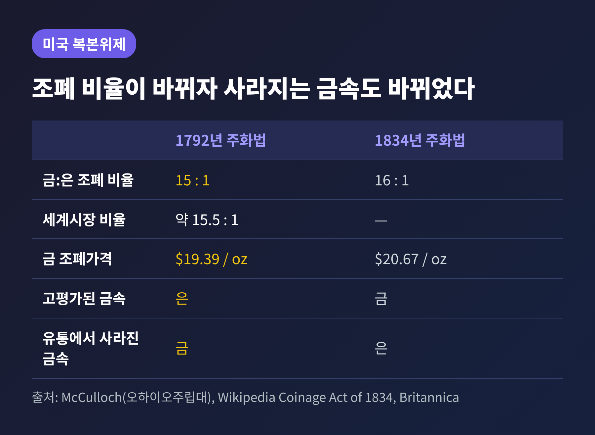
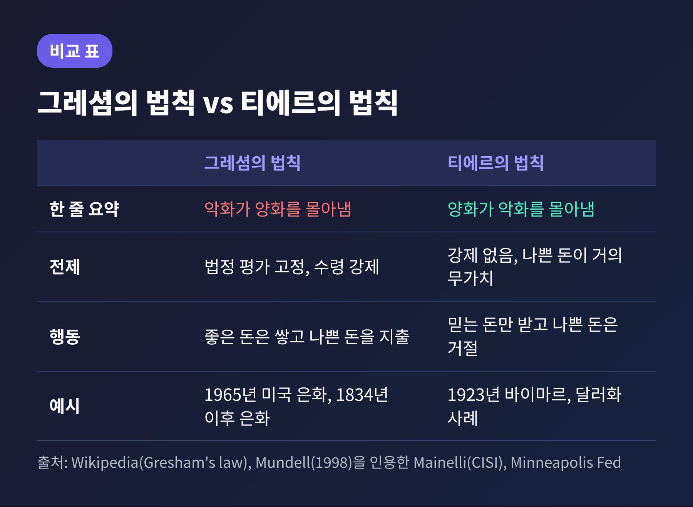

오늘은 그레셤의 법칙에 대해 이야기해 보려 합니다. "악화가 양화를 구축한다"는 말은 널리 알려져 있지만, 이 말이 언제나 맞는 것은 아닙니다. 핵심은 두 돈의 가치를 법으로 같게 묶어 두었는가에 있습니다. 조건, 역사 사례, 흔한 오해, 현대의 변형 순서로 정리해 보겠습니다.
그레셤의 법칙은 "나쁜 돈이 좋은 돈을 몰아낸다"는 관찰입니다. 금속 가치가 다른 주화에 같은 법정 통용 가치를 매기면, 사람들은 값싼 금속의 주화를 쓰고 값진 주화는 쌓아두거나 해외로 내보냅니다. 그 결과 좋은 주화가 유통에서 사라집니다.
여기서 좋은 돈과 나쁜 돈은 도덕적 평가가 아닙니다. 미국 미니애폴리스 연방준비은행의 연구는 조폐국에서의 가치가 시장 가치보다 큰 돈을 나쁜 돈으로, 작은 돈을 좋은 돈으로 정의합니다. 쉽게 말해 법이 실제보다 후하게 쳐 주는 돈이 나쁜 돈입니다.
돈에는 교환수단 외의 얼굴도 있습니다. 외환으로, 상품으로, 가치 저장 수단으로도 쓰입니다. 국내에서 결제할 때보다 다른 용도의 가치가 크면 그 돈은 녹여지거나 수출되거나 장롱으로 들어갑니다.
조지 셀진은 EH.Net 백과사전에서 이 법칙이 좁은 조건에서 성립한다고 설명합니다. 좋은 주화와 나쁜 주화가 같은 법정통화 지위를 갖고, 둘을 구분해 받는 사람을 처벌하는 제재가 있을 때입니다. 이때 주화는 실제 무게가 아닌 액면가로 받아야 합니다.
상점 주인의 입장에서 생각해 보시면 이해가 쉽습니다. 액면은 같은데 금속량이 다른 두 주화를 손에 쥐었다면, 값진 쪽은 아껴 두고 값싼 쪽을 먼저 내놓는 편이 이득입니다. 모두가 같은 계산을 하므로 값진 주화는 점점 보이지 않게 됩니다. 셀진은 이를 죄수의 딜레마에 비유합니다. 나쁜 주화를 먼저 쓰는 것이 각자에게 가장 유리한 선택이 되기 때문입니다.
역사에는 강제의 흔적이 남아 있습니다. 영국에서는 왕의 주화를 정해진 가치로 받기를 거부하면 벌금, 투옥, 몰수로 처벌했습니다. 1775년 미국 대륙회의는 대륙지폐를 정화 가치로 받지 않는 사람을 "이 나라의 적"이라 불렀습니다. 프랑스 혁명정부는 아시냐를 같은 액면의 주화보다 낮춰 받으면 사형에 처했습니다.
흔히 토머스 그레셤이 이 법칙을 정식화했다고 알려져 있으나 사실과 다릅니다. 법칙에 그 이름을 붙인 사람은 19세기 영국의 경제학자 헨리 던닝 맥리오드입니다. 1858년 저서에서 그레셤(1519-1579)의 이름을 따 붙였다고 전해집니다. 일부 자료는 1857년을 함께 적고 있어 연도는 병기합니다.
그레셤은 1558년 엘리자베스 1세에게 좋은 주화와 나쁜 주화는 함께 유통될 수 없다는 취지로 설명했습니다. 헨리 8세와 에드워드 6세 때의 대규모 화폐 악주를 탓했고, "모든 순금이 이 왕국 밖으로 실려 나갔다"고 적었습니다. 다만 마이클 메인넬리는 그레셤이 우리가 아는 형태로 법칙을 진술한 것은 아니라고 짚습니다. 헨리 8세의 악주로 은 함량이 6온스에서 3온스로 줄었다는 서술도 이 편지 쪽에서 나옵니다.
현상 자체는 훨씬 오래되었습니다. 기원전 405년 아리스토파네스의 희극 <개구리>에 이미 좋은 주화가 외면받고 열등한 주화가 쓰이는 장면이 나옵니다. 14세기 니콜 오렘, 1472년 베네치아의 요하네스 데 스트리기스, 1519년 코페르니쿠스도 비슷한 말을 남겼습니다. 그래서 그레셤-코페르니쿠스 법칙이라 부르기도 합니다.
예전엔 이름의 주인이 곧 발견자라고 여겼습니다. 지금은 이름이 붙은 시점과 발견된 시점이 다르다는 점이 상식입니다. 맥리오드가 1860년 책에서 법칙을 서로 다른 방식으로 서술한 탓에 이후 혼란이 생겼다는 평가도 있습니다.
미국은 1792년 주화법으로 금과 은을 모두 자유롭게 주조하는 복본위제를 택했습니다. 은 1달러는 순은 1/1.293 트로이온스, 금의 조폐 가격은 온스당 19.39달러로 정해 비율은 15대 1이었습니다. 금 이글(10달러)은 은 10달러와 같은 법정 가치였습니다.
문제는 세계시장의 비율이 달랐다는 점입니다. 유럽의 금은 비율은 대략 15.5대 1에서 16.06대 1 사이였습니다. 미국 조폐국은 은을 후하게, 금을 박하게 쳐 주고 있었습니다. 금을 유럽에서 팔고 은을 사서 미국 조폐국에 가져가면 이익이 났으므로, 금이 미국 유통에서 빠져나갔습니다.
1834년 주화법은 금 조폐 가격을 온스당 20.67달러(자료에 따라 20.69달러)로 올려 비율을 16대 1로 바꿨습니다. 이글의 순금 함량은 247.5그레인에서 232그레인으로 약 6.3% 줄었습니다. 이번에는 금이 고평가되고 은이 저평가되었습니다. 은화는 유럽으로 흘러가 거의 자취를 감췄습니다.
두 시기를 비교하면 법칙의 구조가 선명해집니다. 어느 금속이 좋은지는 정해져 있지 않습니다. 법정 비율이 시장보다 후하게 쳐 주는 쪽이 나쁜 돈이 되어 남고, 박하게 쳐 주는 쪽이 사라집니다.

17세기 말 영국에서는 손으로 찍은 은화의 가장자리를 깎아 내는 일이 흔했습니다. 1662년 이후의 기계 주조 주화는 테두리가 있어 깎기 어려웠지만 위조가 있었습니다. 1696년에는 위조 주화가 통화의 약 10%에 이르렀다고 합니다.
파리와 암스테르담에서는 은 지금 값이 런던의 액면보다 높았습니다. 새 은화는 녹여져 해외로 나갔고, 닳은 주화가 남아 거래에 쓰였습니다. 마모된 주화가 좋은 주화를 밀어낸 전형적인 장면입니다.
1696년 대개주가 시작되었습니다. 의회는 가치를 낮추는 대신 깎인 은을 공공 비용으로 채워 다시 찍기로 했습니다. 옛 주화는 액면이 아닌 무게로 돌려받았습니다. 1696년부터 1700년까지 주조된 은화는 5,106,019파운드로, 직전 35년간의 3,302,193파운드를 크게 웃돕니다. 아이작 뉴턴은 당시 조폐국 감사관으로 이 작업에 힘을 쏟았고, 1699년 조폐국장이 되었습니다. 다만 위키백과는 대개주가 재정적으로 성공은 아니었다고 평가합니다.
뉴턴은 영국에서 금의 은 환산 가격이 유럽 다른 곳보다 높다고 보고 기니 가격을 낮추도록 권고했습니다. 1717년 12월 포고로 기니는 21실링으로 고정되었습니다. 이후 금은 비율이 법으로 묶이면서 영국은 약 한 세기 동안 사실상 금본위로 움직였습니다. 흥미로운 대목은 뉴턴 자신이 은이야말로 유일한 화폐 본위라고 확신했다는 점입니다.
가까운 사례도 있습니다. 1965년 7월 23일 린든 존슨 대통령이 주화법에 서명했습니다. 다임과 쿼터에서 은을 빼고 구리-니켈 클래드 주화로 바꿨고, 반달러의 은 함량은 90%에서 40%로 낮췄습니다.
배경에는 은값이 있었습니다. 은 가격은 1934년 온스당 0.45달러, 1958년 0.91달러였고, 재무부가 가격 지지를 멈춘 뒤 1968년 6월에는 2.56달러에 이르렀습니다. 쿼터에 든 은이 액면을 넘는 기준은 온스당 1.38달러였으므로, 은값이 오를수록 녹이는 쪽이 이득이었습니다. 은화는 1959년경부터 퇴장되기 시작해 주화 부족이 심해졌습니다.
같은 액면의 90% 은화와 새 주화가 함께 있으니 사람들은 은화를 쥐고 새 주화를 썼습니다. 1971년 반달러에서도 은이 완전히 사라지자 40% 은화마저 유통에서 자취를 감췄습니다.
"나쁜 돈은 언제나 좋은 돈을 몰아낸다"는 이해는 정확하지 않습니다. 노벨상 수상자 로버트 먼델은 1998년 논문에서, 이 법칙은 "둘이 같은 가격에 교환되는 한 싼 돈이 비싼 돈을 몰아낸다"로 고쳐 말해야 한다고 주장했습니다. 슘페터도 통상의 정의가 정확하지 않다고 보았습니다. 호페는 가격통제나 고정 교환비율이 있을 때만 성립한다고 했습니다.
반대 원리에는 이름이 있습니다. 페터 베른홀츠가 아돌프 티에르의 이름을 따 붙인 티에르의 법칙으로, 나쁜 돈이 거의 무가치해지면 좋은 돈이 나쁜 돈을 몰아낸다는 내용입니다. 법으로 수령을 강제하지 않으면 사람들은 신뢰하는 돈만 받습니다. 티에르 본인의 구체적 발언은 이번 조사에서 확인하지 못했습니다.
학계의 논쟁도 있습니다. 롤닉과 웨버는 1986년 논문에서 조폐국이 고평가한 돈이 시장에서 저평가된 돈을 몰아내지 못한 역사 사례를 검토했습니다. 좋은 돈을 프리미엄에 쓰는 데 상당한 비용이 있을 때만 법칙이 성립한다는 새 단서를 제안했습니다. 반면 셀진은 그 사례들에 법적 강제가 없었으므로, 법칙이 보편적이지 않음을 보일 뿐 틀렸다는 증거는 아니라고 반박합니다. 토머스 호건은 2011년 분석에서 법칙이 논리적으로도 경험적으로도 타당하다고 결론지었습니다.
예외도 있습니다. 캘리포니아 골드러시 때 법정통화가 아니었던 민간 금화는 품질 좋은 쪽이 시장을 이겼습니다. 국제무역에서도 플로린, 두카트 같은 안정적 통화가 지배했습니다.

현대에도 비슷한 구조가 나타납니다. 캐나다의 JP 코닝은 2016년 11월 블로그에서 짐바브웨 사례를 분석했습니다. 짐바브웨는 2008년 하이퍼인플레이션 이후 미국 달러를 쓰고 있었는데, 정부가 1달러짜리 본드노트를 미국 달러와 1대 1로 맞추겠다고 밝혔습니다.
코닝은 법정통화 규정이 예금과 현금을 동가로 받게 하지만 예금은 가치가 낮을 것으로 기대된다고 설명합니다. 그러면 고평가된 예금은 쓰이고 실물 달러는 쌓입니다. 암시장의 실물 달러 프리미엄은 약 5~20%였고, 올드뮤추얼 주식은 런던에서 약 2.30달러, 짐바브웨에서는 약 3.20달러로 거래되어 실물 달러 대비 예금 가치가 약 0.72로 추산되었습니다. 다만 이것은 한 연구자의 해석이라는 점은 밝혀 둡니다.
반대 방향도 있습니다. 법정통화 강제가 없거나 자국 통화가 신뢰를 잃으면 사람들은 믿는 돈을 택합니다. 1923년 바이마르 독일에서는 사람들이 자국 통화를 받지 않았고, 이스라엘, 에콰도르 같은 나라의 달러화 사례도 같은 맥락으로 소개됩니다. 홍콩금융관리국 총재였던 조지프 얌은 2002년 한 나라에 여러 통화가 공존할 때 이 법칙이 어떻게 적용될지 답을 모른다고 솔직히 적었습니다. 암호자산에 대해서는 확실한 근거를 찾지 못해 사례로 다루지 않았습니다.
정리하면 이렇습니다.
그레셤의 법칙은 돈이 본래 나쁘기 때문에 일어나는 일이 아닙니다. 법이 서로 다른 가치를 같은 값으로 묶었을 때 일어나는 일입니다.
"악화가 양화를 구축하는 것은 가격이 묶여 있을 때뿐이다."
가격을 묶는 규칙이 어떤 행동을 낳는지 살피는 일이 이 법칙에서 얻을 수 있는 가장 큰 교훈일 것입니다. 오늘 지갑 속 동전을 한 번 꺼내 보신다면, 어떤 것을 먼저 쓰게 되는지부터 떠올려 보시길 권합니다.